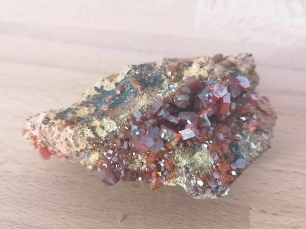
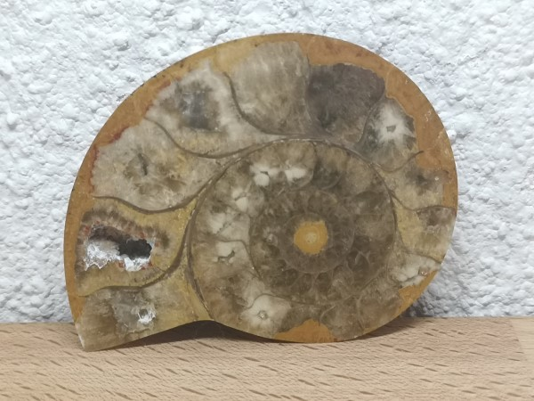

Über mich

- Ausbildungen
- Bachelor Erdwissenschaften an der Uni Bern (ongoing)
- Kursdiplom "Kommunikation und Betreuung" (2019)
- Maturaabschluss an der KS Sursee (2018)
- J&S Schar/Lagerleiterkurs Abschluss (2018)
- J&S Gruppenleiterkurs Abschluss (2017)
- Interessen
- Mineralien und Gesteine
- Jungwacht Sursee
- Python Programmiersprache
- Skateboarding
- Meine Social Medias
Zuletzt hinzugefügte Stücke
1 / 4

| Name: |
Vanadinit |
| Formel: |
Pb5[Cl|(VO4)3] |
| Härte: |
3 |
| Allg. Info: |
Dient als Vanadiumquelle für Stahllegierungen
|
2 / 4

| Name: |
Purpurit |
| Formel: |
Mn3+[PO4] |
| Härte: |
4 - 4.5 |
| Allg. Info: |
sehr schöne Strichfarbe (Purpurrot)
|
3 / 4

| Name: |
Beryll |
| Formel: |
Al2Be3[Si6O18] |
| Härte: |
7.5 - 8 |
| Allg. Info: |
Farbe wegen Chrom- und Vanadium-Einschlüsse. Edelstein (Smaragd/Aquamarin)
|
4 / 4

| Gesteinsname: |
fossile Amonitschale |
| Erkennbare Dinge: |
versteinerte (kalkhaltige) Amonitschale |
❮
❯
Allgemeine Infos meiner Mineralien & Gesteinssammlung
Der Anfang meiner Mineralien & Gestein-Sammlung begann in meiner Kindheit, als mein Bruder mir seine ersten Exemplare zeigte,
welche er kurze Zeit später auch in unserem gemeinsamen Zimmer ausstellte. Man konnte sich sicher sein, dass wir nach einer Wanderung
mindestens einen schönen (damals war unsere Definition von Schön = Glitzernd oder Rund) Stein mit nach Hause nahmen. Somit wuchs
unsere Sammlung mit der Zeit immer mehr, und wir hatten keinen Platz mehr im Zimmer. Seit dem ist der Grossteil dieser Sammlung auf unserem
"Steinweg", welcher zur Haustür führt, zubegutachten. Ein kleiner Teil der Mineralien konnte ich während meines Zivildienst-Aufenthaltes
bei einem Brocki zu günstigen Preisen ersteigern. Mein Bruder verlor sein Interesse an Mineralien, meines wurde grösser
und so kam es dazu, dass ich vor meinem Geologiestudium den grössten Teil der Sammlung leise anektierte.
Insgesamt habe ich 155 Mineralien und Gesteine, wobei ca. 10 noch nicht identifiziert sind. Da sie leider geschliffen und poliert sind, ist es sehr
schwierig, ohne richtige Bestimmungstabelle, diese richtig zu zuordnen, da es sein paar Varietäten von z.B. Jaspis oder Jadeit gibt.
Falls Sie ein paar erkennen können, würde ich mich freuen, wenn Sie mir eine Email schreiben!
Was ist die Mohsche Härteskala?
Dieser Härtewert lässt sich nur durch den Vergleich von mehreren Werkstoffen oder Werkstoffzuständen ermitteln.
Harte Stoffe ritzen weiche. Diese Einsicht ist Grundlage der Härteprüfung nach Friedrich Mohs (1773–1839), die
vornehmlich in der Mineralogie zum Einsatz kommt. Mohs, ein Geologe, ritzte verschiedene Minerale gegeneinander
und ordnete sie so nach ihrer Härte. Durch das exemplarische Zuordnen von Zahlenwerten für weit verbreitete und
somit leicht zugängliche Minerale entstand eine Ordinalskala, die Mohs-Skala, die in der Mineralogie und Geologie
bis heute in weitem Gebrauch ist. Die Härteunterschiede zwischen den einzelnen Referenzmineralen sind nicht linear.
Angaben zur Härte von Mineralen beziehen sich immer auf die Mohs-Skala, falls nichts anderes angegeben ist. Zum
Vergleich aufgeführt ist die auch als absolute Härte bezeichnete Schleifhärte nach Rosiwal, die den Schleifaufwand
des jeweiligen Stoffes charakterisiert und einen besseren Eindruck von den tatsächlichen Härteverhältnissen gibt.
Beide Härteskalen sind einheitslos. Außerdem ist in der Tabelle die Härte nach dem Vickersverfahren angegeben.
Sie gibt den besten Bezug auf die heute gängigen Härtemessverfahren wieder.
In Bezug auf die Verwendbarkeit und Pflegebedürftigkeit von Mineralen als Schmuckstein wird oft auch eine etwas
gröbere Einteilung angegeben. So gelten Minerale der Mohshärte 1 bis 2 als weich, von 3 bis 5 als mittelhart,
und alle Minerale über der Mohshärte 6 werden als hart bezeichnet.